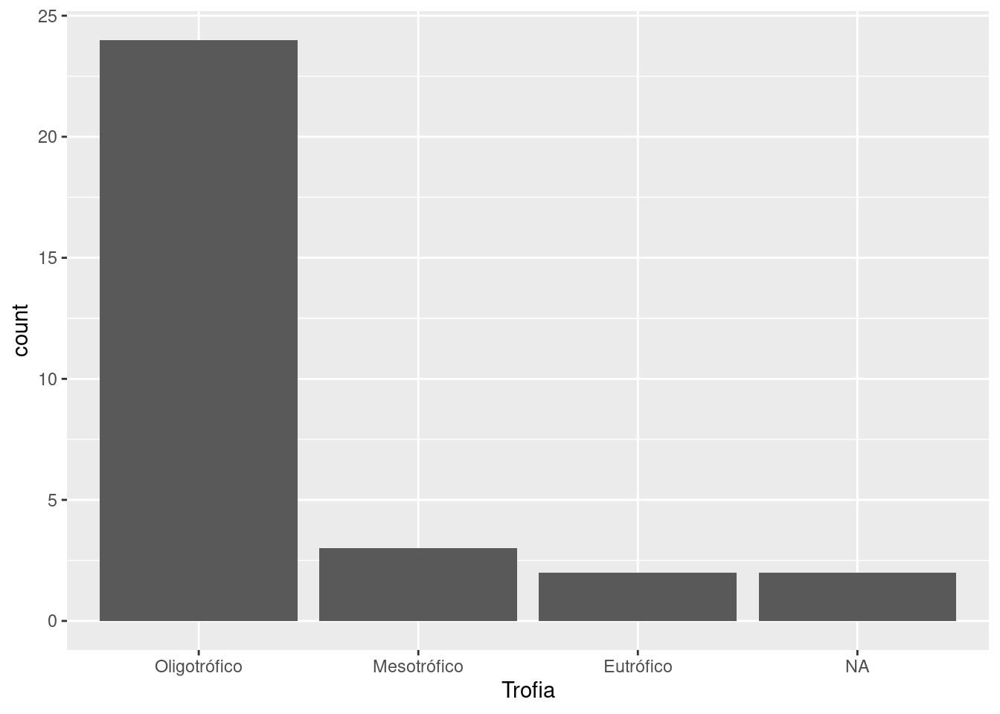

library(tidyverse)
library(gt)Descrevendo variáveis qualitativas
R
Análise de dados
Estatística descritiva
Variáveis qualitativas
Visualização de dados
Descrição de variáveis qualitativas, incluindo tabelas de frequência, gráficos de barras e considerações sobre variáveis ordinais.
DicaPacotes e funções utilizados
Variáveis qualitativas podem ser categóricas não ordenadas ou categóricas ordenadas. A descrição de variáveis desta natureza se dá por meio da contagem e da representação dos níveis destas variáveis por meio da contagem total, pelos valores relativos ou percentuais.
Importe a base de dados Reservatorios_Parana_parcial.csv.
res <- read_delim(
file = "https://raw.githubusercontent.com/FCopf/datasets/refs/heads/main/Reservatorios_Parana_parcial.csv",
delim = ",",
locale = locale(decimal_mark = ".", encoding = "UTF-8")
)Na tabela, temos 3 variáveis categóricas: Reservatorio, Bacia e Trofia. A primeira identifica cada reservatório pelo seu nome. A segunda é uma variável categórica não ordenada (nível de mensuração nominal) e a terceira uma variável categórica ordenada (nível de mensuração ordinal).
1 Representação em tabelas de frequência
Se uma variável é descrita no nível de mensuração nominal, como é o caso de Bacia, podemos obter a frequência com que cada um dos níveis aparece na variável. Essa contagem pode ser obtida por meio de uma tabela de frequências.
fbacia <- res |>
group_by(Bacia) |>
summarise(Frequencia = n())
fbacia |>
gt()| Bacia | Frequencia |
|---|---|
| Iguacu | 13 |
| Ivai | 2 |
| Litoranea | 4 |
| Paranapanema | 7 |
| Piriqui | 2 |
| Tibagi | 3 |
O resultado mostra que existem 13 reservatórios na tabela pertencentes à bacia do rio Iguacu, 2 à bacia do rio Ivai e assim por diante. Confira estas contagens na base de dados.
As linhas da tabela estão organizadas em ordem alfabética. Para facilitar a visualização, podemos ordená-las de modo decrescente como função do número de reservatórios por bacia.
fbacia <- fbacia |>
arrange(desc(Frequencia))
fbacia |>
gt()| Bacia | Frequencia |
|---|---|
| Iguacu | 13 |
| Paranapanema | 7 |
| Litoranea | 4 |
| Tibagi | 3 |
| Ivai | 2 |
| Piriqui | 2 |
Podemos olhar também para a frequência relativa do número de reservatórios por bacia.
fbacia_rel <- fbacia |>
mutate(Freq_relativa = Frequencia / sum(Frequencia))
fbacia_rel |>
gt()| Bacia | Frequencia | Freq_relativa |
|---|---|---|
| Iguacu | 13 | 0.41935484 |
| Paranapanema | 7 | 0.22580645 |
| Litoranea | 4 | 0.12903226 |
| Tibagi | 3 | 0.09677419 |
| Ivai | 2 | 0.06451613 |
| Piriqui | 2 | 0.06451613 |
A característica da frequência relativa é que o somatório da coluna deve ser igual a 1, enquanto a frequência numérica tem o somatório igual ao número de linhas na tabela.
fbacia_rel |>
summarise_if(is.numeric, sum) |>
gt()| Frequencia | Freq_relativa |
|---|---|
| 31 | 1 |
2 Tabelas de frequência para variáveis categóricas ordenadas
A característica da variável Trofia difere da anterior unicamente por ser uma variável categórica ordenada que, no caso, expressa o grau de eutrofização dos reservatórios. Neste sentido, a única mudança na representação da variável se deve ao fato de que existe uma sequência natural para representar os níveis. Podemos indicar que uma determinada variável é categórica ordenada fazendo uma pequena alteração na base de dados.
Se montarmos uma tabela de frequência da variável Trofia, teremos as linhas organizadas em ordem alfabética:
ftrofia <- res |>
group_by(Trofia) |>
summarise(Frequencia = n())
ftrofia |>
gt()| Trofia | Frequencia |
|---|---|
| Eutrófico | 2 |
| Mesotrófico | 3 |
| Oligotrófico | 24 |
| NA | 2 |
Se desejarmos que as colunas apareçam como função do nível de eutrofização, devemos primeiro transformar a variável Trofia em um fator ordenado, que é o modo como o R interpreta uma variável categórica ordenada.
Inicialmente, use o comando abaixo para verificar que o R entende a variável Trofia como um character (<chr>).
glimpse(res)Rows: 31
Columns: 11
$ Reservatorio <chr> "Cavernoso", "Curucaca", "Foz do Areia", "Irai", "JMF", …
$ Bacia <chr> "Iguacu", "Iguacu", "Iguacu", "Iguacu", "Iguacu", "Iguac…
$ Fechamento <dbl> 1965, 1982, 1980, 2000, 1970, 1996, 1978, 1979, 1998, 19…
$ Area <dbl> 2.90, 2.00, 139.00, 15.00, 0.45, 3.40, 14.00, 3.30, 124.…
$ Trofia <chr> "Oligotrófico", "Oligotrófico", "Oligotrófico", "Eutrófi…
$ pH <dbl> 7.4, 7.0, 7.3, 6.9, 7.3, 7.1, 8.8, 7.1, 7.3, 6.5, 8.6, 9…
$ Condutividade <dbl> 33.1, 32.4, 35.5, 50.2, 40.2, 23.7, 125.6, 22.8, 39.6, 2…
$ Alcalinidade <dbl> 139.80, 125.70, 97.00, 3.30, 3.70, 152.70, 526.00, 50.67…
$ P.total <dbl> 7.8, 4.7, 14.3, 53.4, 41.2, 3.3, 15.2, 4.5, 12.1, 11.0, …
$ Riqueza <dbl> 18, 16, 19, 12, 18, 17, 11, 8, 21, 8, 24, 21, 22, 15, 10…
$ CPUE <dbl> 9.22, 28.73, 11.59, 30.76, 5.95, 7.75, 7.51, 4.01, 20.83…Iremos transformar esta variável para que o R a interprete como uma variável categórica ordenada.
res <- res |>
mutate(Trofia = factor(Trofia, ordered = TRUE,
levels = c("Oligotrófico",
"Mesotrófico",
"Eutrófico")))Após aplicarmos este comando, vemos que agora o R reconhece esta variável como do tipo <ord>:
glimpse(res)Rows: 31
Columns: 11
$ Reservatorio <chr> "Cavernoso", "Curucaca", "Foz do Areia", "Irai", "JMF", …
$ Bacia <chr> "Iguacu", "Iguacu", "Iguacu", "Iguacu", "Iguacu", "Iguac…
$ Fechamento <dbl> 1965, 1982, 1980, 2000, 1970, 1996, 1978, 1979, 1998, 19…
$ Area <dbl> 2.90, 2.00, 139.00, 15.00, 0.45, 3.40, 14.00, 3.30, 124.…
$ Trofia <ord> Oligotrófico, Oligotrófico, Oligotrófico, Eutrófico, Mes…
$ pH <dbl> 7.4, 7.0, 7.3, 6.9, 7.3, 7.1, 8.8, 7.1, 7.3, 6.5, 8.6, 9…
$ Condutividade <dbl> 33.1, 32.4, 35.5, 50.2, 40.2, 23.7, 125.6, 22.8, 39.6, 2…
$ Alcalinidade <dbl> 139.80, 125.70, 97.00, 3.30, 3.70, 152.70, 526.00, 50.67…
$ P.total <dbl> 7.8, 4.7, 14.3, 53.4, 41.2, 3.3, 15.2, 4.5, 12.1, 11.0, …
$ Riqueza <dbl> 18, 16, 19, 12, 18, 17, 11, 8, 21, 8, 24, 21, 22, 15, 10…
$ CPUE <dbl> 9.22, 28.73, 11.59, 30.76, 5.95, 7.75, 7.51, 4.01, 20.83…E se fizermos:
res$Trofia [1] Oligotrófico Oligotrófico Oligotrófico Eutrófico Mesotrófico
[6] Oligotrófico Oligotrófico Oligotrófico Oligotrófico Oligotrófico
[11] Oligotrófico Oligotrófico Oligotrófico Oligotrófico Mesotrófico
[16] Oligotrófico Oligotrófico Oligotrófico Mesotrófico Oligotrófico
[21] Oligotrófico Oligotrófico Oligotrófico <NA> Oligotrófico
[26] Oligotrófico Eutrófico Oligotrófico Oligotrófico <NA>
[31] Oligotrófico
Levels: Oligotrófico < Mesotrófico < EutróficoTemos agora a indicação de que há uma ordenação sequencial nos níveis de trofia em que Oligotrófico < Mesotrófico < Eutrófico.
A partir de agora, se extrairmos uma tabela de frequência relativa, as linhas serão apresentadas na ordem pré-definida.
ftrofia <- res |>
group_by(Trofia) |>
summarise(Frequencia = n())
ftrofia |>
gt()| Trofia | Frequencia |
|---|---|
| Oligotrófico | 24 |
| Mesotrófico | 3 |
| Eutrófico | 2 |
| NA | 2 |
Na tabela acima, a última linha aparece vazia, pois há casos sem informação, isto é, com dados faltantes que são representados por NA. Caso você não queira representar os dados faltantes, é possível utilizar a função drop_na() para excluir estas linhas.
ftrofia <- res |>
drop_na(Trofia) |>
group_by(Trofia) |>
summarise(Frequencia = n())
ftrofia |>
gt()| Trofia | Frequencia |
|---|---|
| Oligotrófico | 24 |
| Mesotrófico | 3 |
| Eutrófico | 2 |
Podemos adicionar uma coluna de frequência relativa como fizemos anteriormente.
ftrofia_rel <- ftrofia |>
mutate(Freq_relativa = Frequencia / sum(Frequencia))
ftrofia_rel |>
gt()| Trofia | Frequencia | Freq_relativa |
|---|---|---|
| Oligotrófico | 24 | 0.82758621 |
| Mesotrófico | 3 | 0.10344828 |
| Eutrófico | 2 | 0.06896552 |
3 Representação gráfica
Variáveis categóricas não ordenadas ou ordenadas podem ser representadas por gráficos de barras.
NotaO pacote
ggplot2
Utilizaremos o pacote ggplot2 para representar graficamente as variáveis. O ggplot2 é instalado e habilitado juntamente com o tidyverse, de modo que neste momento você já o tem habilitado em sua sessão do R.
Para uma rápida explicação do ggplot2, veja aqui. Para uma explicação detalhada, veja o site oficial (ggplot2){target=“_blank”} e o livro ggplot2: Elegant Graphics for Data Analysis.
3.1 Criando um gráfico no ggplot2
Um gráfico no ggplot2 é feito em camadas que devem ter minimamente:
- A definição da tabela de dados;
- A estética gráfica indicando quais variáveis serão representadas e suas posições no gráfico;
- O formato da representação por meio de geometrias gráficas (ex. gráficos de pontos, linhas, barras, etc.).
Esta abordagem permite que tenhamos um método consistente para construir diferentes tipos de gráficos.
Gráfico de frequência
Um gráfico de barras da variável Bacia ficaria:
ggplot(data = res) + # define tabela de dados
aes(x = Bacia) + # define a estética gráfica
geom_bar() # define a geometria gráfica
Vamos entender o comando:
ggplot(res): define a tabela de dados que será utilizada.aes(x = Bacia): define que o eixo x deste gráfico deverá conter os níveis da variávelBacia.geom_bar(): define o tipo gráfico, que noggplot2é denominado de geometria gráfica.
Estes argumentos devem ser inseridos sequencialmente separados pelo símbolo +.
O argumento geom_bar() espera como argumento uma variável qualitativa em um dos eixos. Por padrão, a função fará a contagem dos níveis dentro da variável e representará no eixo y.
Poderíamos ter feito o mesmo gráfico de barras indicando que a variável Bacia seria representada no eixo y, o que resultaria em um gráfico de barras invertido conforme abaixo:
ggplot(data = res) +
aes(y = Bacia) +
geom_bar()
A estética gráfica (aes()) não precisa estar em uma linha separada. Também não é obrigatório escrevermos data = res. De fato, é mais comum escrevermos esta sequência de argumentos como:
ggplot(res, mapping = aes(x = Bacia)) +
geom_bar()
ou simplesmente:
ggplot(res, aes(x = Bacia)) +
geom_bar()o que irá gerar os mesmos resultados.
Finalmente, poderíamos organizar as barras em ordem decrescente como fizemos com as tabelas de frequência, utilizando a função fct_infreq():
ggplot(res, aes(x = fct_infreq(Bacia))) +
geom_bar()ou em ordem crescente, revertendo o comando anterior com a função fct_rev().
ggplot(res, aes(x = fct_rev(fct_infreq(Bacia)))) +
geom_bar()Formatando a figura
Para tornar a figura mais autoexplicativa, podemos adicionar camadas identificando os eixos e fornecendo título, subtítulo e outras informações:
ggplot(res, aes(x = Bacia)) +
geom_bar() +
labs(
title = "Reservatórios do Estado do Paraná",
subtitle = "Reservatórios por bacia hidrográfica",
caption = "Dados obtidos do livro: Biocenoses em Reservatórios",
x = "Bacia hidrográfica",
y = "Frequência"
)Gráfico de frequência relativa
Utilizando o ggplot2, é simples construir um gráfico de frequência relativa.
ggplot(res, aes(x = Bacia, y = after_stat(prop), group = 1)) +
geom_bar()
Veja que para isso transformamos as contagens em proporções. Se quisermos transformar em percentuais, então:
ggplot(res, aes(x = Bacia, y = after_stat(prop), group = 1)) +
geom_bar() +
scale_y_continuous(labels = scales::percent)Outras opções para construir um gráfico de barras
As figuras que acabamos de fazer apresentam, de modo gráfico, as mesmas informações das tabelas de frequência vistas no início do capítulo sem que fosse necessário construir a tabela de frequência, pois o comando geom_bar() já realiza esta contagem.
Entretanto, caso já tivéssemos a tabela de frequência, também poderíamos utilizá-la diretamente. No início do capítulo, construímos a tabela fbacia_rel, onde tínhamos 3 colunas: Bacia, Frequencia, Freq_relativa.
Podemos construir gráficos de barras das tabelas Frequencia ou Freq_relativa da seguinte forma:
ggplot(fbacia_rel, aes(x = Bacia, y = Frequencia)) +
geom_bar(stat = "identity")
e
ggplot(fbacia_rel, aes(x = Bacia, y = Freq_relativa)) +
geom_bar(stat = "identity")
Para utilizar diretamente uma tabela de frequências, devemos oferecer a variável do eixo x, do eixo y e, no comando geom_bar(), adicionar o argumento stat = "identity". Feito isso, o comando utiliza diretamente os números disponíveis em cada linha da coluna Frequencia.
Gráfico de frequência para variáveis categóricas ordenadas
Para variáveis categóricas ordenadas, valem os mesmos comandos apresentados acima. Usamos a função geom_bar() para construir os gráficos de barras. A diferença é que, antes da construção, é necessário que a variável em questão tenha sido transformada para um fator ordenado.
Lembrando o que fizemos no início do capítulo, esta transformação pode ser feita para a variável Trofia com os comandos:
res <- res |>
mutate(Trofia = factor(Trofia, ordered = TRUE,
levels = c("Oligotrófico",
"Mesotrófico",
"Eutrófico")))Feito isso, o comando geom_bar() vai organizar os níveis de acordo com a sequência definida:
ggplot(res, aes(x = Trofia)) +
geom_bar()
E caso seja necessário retirar reservatórios com dados faltantes em Trofia, podemos fazer:
res |>
drop_na(Trofia) |>
ggplot(aes(x = Trofia)) +
geom_bar()
NotaPré-processamento do data-frame para o
ggplot2
No comando acima, a tabela de dados não foi inserida dentro do comando ggplot(). Ela foi inicialmente processada para remoção de NAs com a função drop_na() e o operador |> foi utilizado para inserir o resultado do processamento no ggplot(). Esta é outra maneira de combinar capacidade de processamento de dados no R com a representação gráfica do pacote ggplot2.